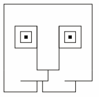

solo animations
That theme really appealed to me as I like moving pictures. I tried to focus on coding as much as I could and keep my graphics consistent. Helping other students to learn code made me understand it even more.
The project pools were something I enjoyed as it was fast and goal oriented exercise in groups of two. We had a lot of tasks in those weeks and some of my animations need some refignment but I worked with some really nice people and produced lot of stuff I am proud of and satisfied with the results. I made some pictures move interactively which is what I like in programming.